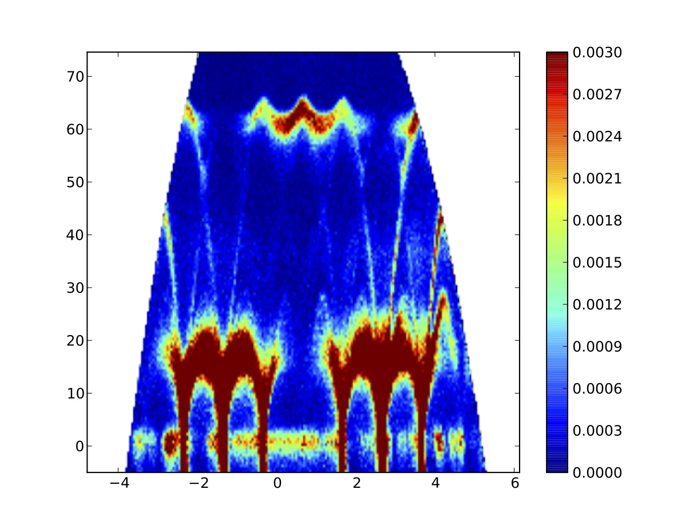
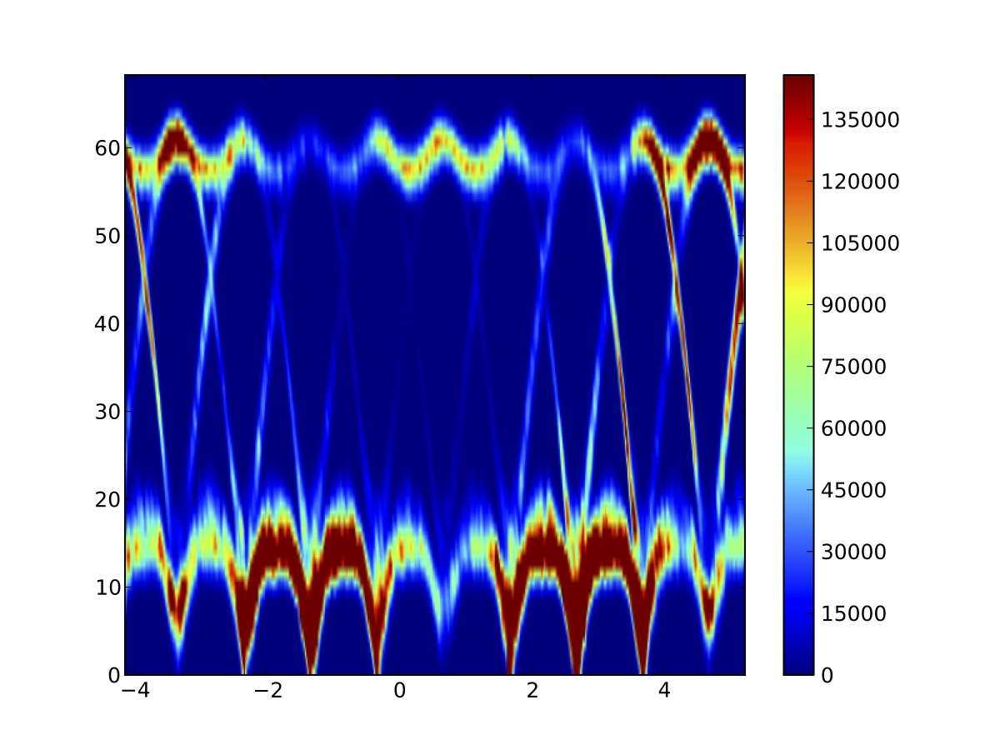
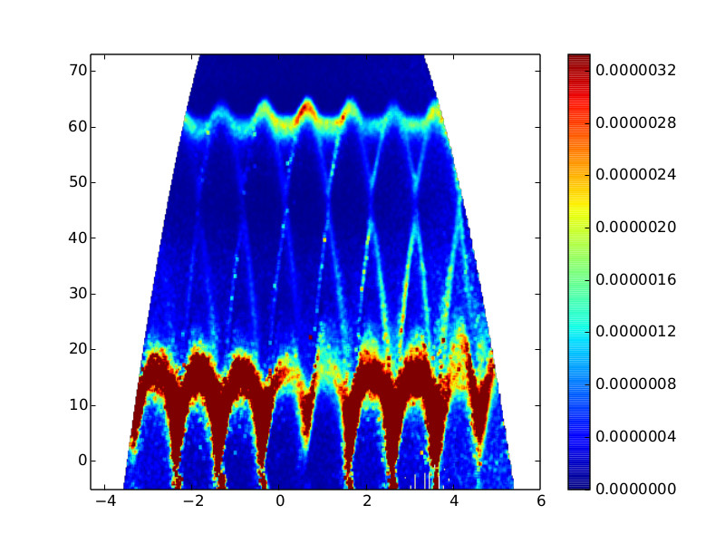

Single Crystal Phonon Scattering - Si in diamond structure
The differential cross section is given by
$$
\begin{aligned}
{\left(\frac{d^2\sigma}{d\Omega dE_f}\right)}_{\rm{coh}+1}
= &
\frac{k_f}{k_i} \frac{(2\pi)^3}{2v_0}
\sum_s \sum_{\mathbf{\tau}}
\frac{1}{E_s}
\left| \sum_d \frac{\overline{b_d}}{\sqrt{M_d}} exp(-W_d)
exp(i\mathbf(Q) . \mathbf{d}) \right|^2 \\
&
\times (n_s + 1) \delta(\omega - \omega_s) \delta(\mathbf{Q}-\mathbf{q}-\mathbf{\tau})
\end{aligned}
$$
Experimental data

Simple modeling
Phonon energies and polarizations were computed from VASP and phonopy.

Modeling convoluted with resolution function computed using MCViNE
This is similar to the previous result.
The improvement was achieved by a convolution of the modeled intensity
with a resolution function computed from a MCViNE simulation,
in which a "$\delta$-function kernel" was used.

Full Monte Carlo ray-tracing simulation using MCViNE
This simulation includes two kernels: one for coherent single-phonon
scattering, and one for multiphonon scattering in incoherent approximation.
